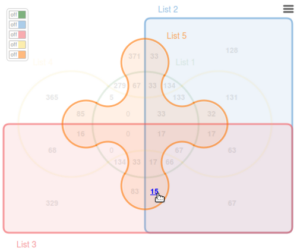
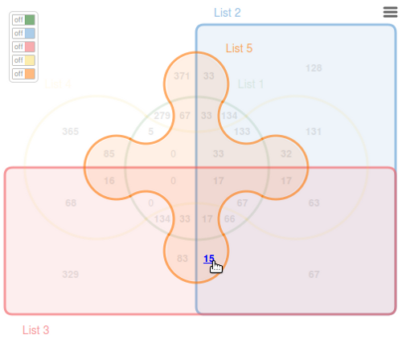

Quick start
How to provide list(s) of element(s)
On the right side of the example page, two tabs are available:
- "Paste lists": fill textareas with your own data (warning: one element per
line!).
If the same item is given multiple times, this one will be considered only once.
You can also customize the list labels using the text field on the top of each textarea. The length of the name is limited at 11 characters. - "Upload lists": define upload parameters, such as field separator, header line,
and browse files on your computer to select one text delimited file (warning: each line
must have the same number of fields!).
If the same item is given multiple times in a specific column, this one will be considered
only once.
Two display modes: classic and Edwards
The default value is 'classic' to output a classical venn diagram. If you want an Edwards-Venn diagram representation, just select 'edwards' using the drop-down list. Available values are: 'classic' and 'edwards'.

Highlighting intersections
When you point an intersection count, all list(s) sharing it are highlighted.
 

Question mark
For all diagrams, when the intersection count size exceeds the allowed space, the value is substituted by a question mark. The real value pops-up on mouseover.
Click function
To display the specific or shared element(s) click on the intersection numbers. The linked elements are listed in the textarea below the jvenn diagram.

Export to PNG, SVG and/or CSV
By clicking on the top right icon you can export:
- the venn diagram as a PNG file
- the venn diagram as a SVG file
- the intersection table as a CSV file
Search for an element
Fill the input field on the top of the page to search for an element (case sensitive). Three different status are possible:
- found only one element matched, the corresponding intersection is then highlighted
- not found no element matched, all intersections are faded out
- ambiguous two or more elements matched, keep on searching...
Switch button panel
If you provide more than 3 lists a switch button panel is available. Use it to focus on the intersection of interest.
Moreover, to enhance the figure’s readability on the classical six lists Venn graphic, it was decided
not to present all the values and to link some areas to their figures using lines. This
still did not permit to show all figures, use the switch button panel to display it.
Warning: having one switch botton on disable all other interaction with the diagram.


Extra charts
Having an overview of the list size and comparing multiple diagrams can be difficult using a Venn diagram. Thus, jvenn provides two extra charts bellow the Venn.
- The first one represents the input lists size histogram. It allows users to check the homogeneity of the lists size.
- The second one displays the number of elements located in intersections of a certain size. This feature can be used to compare the compactness of multiple Venn diagrams.

In the first chart you can see the number of elements in each list (the shorter list is the "list 5" with 858 elements).
In the second chart, 1707 elements are specific of one list and 399 elements are shared by two of the six lists.